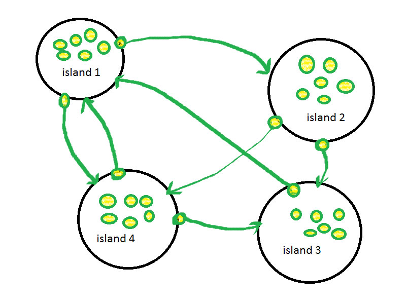
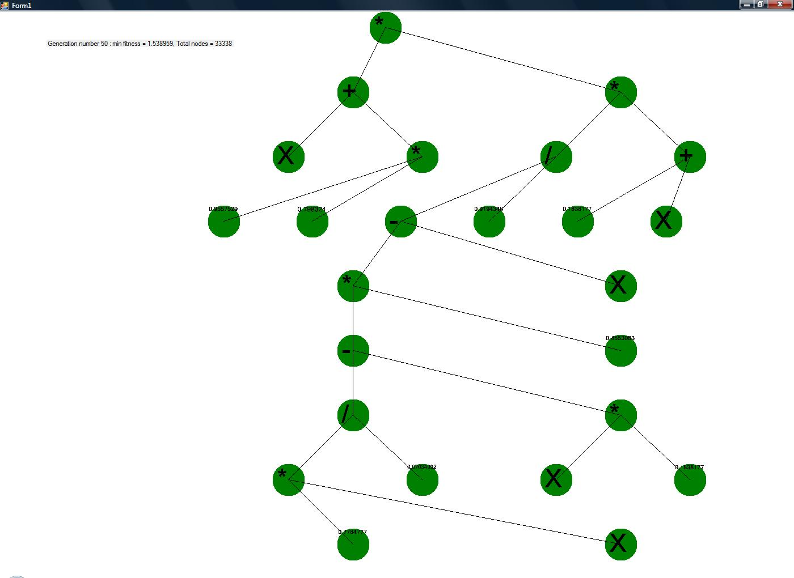

Function reference 0.2 |
|||||||
The Engine class
|
GeneticProgrammingEngine engEngine = new GeneticProgrammingEngine(); engEngine.SetFunctions = new FunctionType[] |
In this example, the user created the functions add, substract, multiply, and divide to be participated in the tree creation.
which means there is a random chance that these functions will appear in random programs, when they will be created.
public ValueType[] SetValues
The set values property allows the user to set the random values that
May (or may not) will be appearing in the trees, when they initially randomized.
Exmaple of usage :
GeneticProgrammingEngine engEngine = new GeneticProgrammingEngine(); engEngine.SetValues = new TreeLanguageEvolute.ValueType[] {new RandomMacro()}; |
In this example, the user created the random values to appear randomly in the trees, when they are created
public FitnessGoalEnum FitnessGoal
The fitness goal to run the algorithm for (for an example, minimal fitness
Is used to run the algorithm towards minimal fitness)
Maximal fitness is used to run the algorithm towards maximal fitness.
The possible values are MIN_FITNESS or MAX_FITNESS
Let's give an example :
let's say there is an ant which is supposed to eat as many food parts as it can. When we measure the ant's fitness, we would want to measure how many food parts it ate at the end. that would be a sign to how successful the program is. in that case, we would need to set the fitness goal towards max fitness.
On another case, let's say there is a robot that needs to navigate to a point in a map. when we measure the robot's fitness, we would want to measure how close he got to that point, Which means, distance. the less distance = the better.that would be a sign to how successful the program is. in that case, we would need to set the fitness goal towards the min fitness.
public float SaveTopIndividuals
A value between 0 to 1 which means
How much precentage of individuals whose fitness is the best, will be automatically transferred to the next generation.
for an example : if we have a population of 1000 programs, and the value of SaveTopIndividuals is 0.1F, 10% , or 100 best programs will be simply copied to the next population.
Those top individuals will not get destroyed and will keep on living, unless there are better individuals to take their place at the safety ring.
The best value to use here is 0.01F.
public float ApplyCrossoverOnlyWithFitnessChange
A property that once it is set, the crossover will only be saved
If the produced children fitness has changed by a considerable amount.
For an example, if this property is 0.3, then the crossover will
Only be saved when the fitness is 130% of the original parent.
For best performance, this value should be between 0.01 to 0.1
Concrete example :
we have parent A and parent B. parent A has 100 fitness, parent B has 50 fitness.
ApplyCrossoverOnlyWithFitnessChange = 0.1F.
The two sons are being produced by a crossover. both sons are being evaluated, and it seems that son A has 50 fitness, son B has 120 fitness.
The question to be asked is : does son A got 110% of it's parent fitness? NO! then the parent A is remained in the population.
does son B got 110% of it's parent fitness? yes! so the son will be copied and overwrite the parent B in the population.
I have to say that this property doesn't look that promising. The only case it can do good things is when your'e really low on memory and you want to achieve maximum results with little population as possible, and when you don't care how long the algorithm will run.
public Program[] Population
Get the most updated population of programs so far
public int NumberOfPrograms
The property Sets the number of programs in the population.
When we create random programs, we will use this property to determine how big our population is.
The population array is created based on this property. if this property is 100, then our population size will be 100.
The more programs we have = the better chance to find a solution. There is no other property that will gain you
much performance increase in the evolution process. Only this property has the strength to really affect the evolution process.
public int NumberOfIslands
The property Sets the number of islands in the population.
Every island is a container for programs to reside in. The minimum number of islands, is 1.
Using islands we can create a mechanism that allows parallel solution seeking and more variety in the population.
Picture : an illustration of islands and migrations.

public int MigrationsPerMigrationGeneration
The property Sets the number of migrations in a migration generation.
The number of migrations between islands is global to the entire population.
In a migration, an individual from the mating pool of island X is copied and then replacing individual in island Y inside it's mating pool.
public int OnceInHowManyGenerationsPerformMigrationGeneration
The property Sets how often the generation of migrations occurs.
An example : if this value is set to 1, then in each generation, there would be MigrationsPerMigrationGeneration migrations.
An example : if this value is set to 3, then this would be the result :
In generation 0, migration will occur. the number of migrations will be MigrationsPerMigrationGeneration.
In generation 1, no migration.
In generation 2, no migration.
In generation 3, migration will occur. the number of migration will be MigrationsPerMigrationGeneration.
By default this value is set to 1, but by custom defining it, you can artifically create stages of starvation - letting the islands to work on solutions,
And bombard them with a supply of individuals from other islands at a decided moment.
This kind of scenario was tested and was not found effective in increasing performance.
public float MutationChance
The property Sets how often mutation will occur.
Mutation in Evolute, replaces one of the individuals in the mating pool after their fitness was examined, and creates instead an entirely new program.
This gurantees that this mutated individual will participate in genetic operations, such as cloning and crossover with the same chance of other
healthy individuals.
public float PrecentageToTakeBetterIndividuals
Deprecated. Use default value of 1.0f unless you want problems.
public float EnableParsimonyPressure
Set this value in order to enable parsimony pressure and tracking.
The value is affecting the population in this way :
The chance to decide whether or not to apply a parsimony pressure on a tournament selection, is based on tracking the size of the programs since generation 0.
The EnableParsimonyPressure value is multiplied by the size of the programs at generation 0, in order to find out what is the amount of pressure, to keep the size of
the programs low at generation x.
An example : if the EnableParsimonyPressure value is 0.1F, then at generation 1, then the maximal amount of nodes would be 1.1x nodes than in generation 0.
If the
EnableParsimonyPressure value is 0.001F, then at generation 1, then the maximal amount of nodes would be 1.001x nodes than in generation 0.
A concrete example :
At generation 0, the amount of nodes is 10.
if EnableParsimonyPressure value is 0.1F, then at generation 1, the maximal number of nodes will be 11. At generation 20, the maximal number of nodes will be 20.
if EnableParsimonyPressure value is 0.001F, then at generation 1, the maximal number of nodes will be 10. At generation 100 it would be 11. By generation 1000, it would be 20.
The restriction on program size is soft and will not immideately show a significant effect, unless the restriction is violently violated.
public bool OnlyBetterFitnessIslands
Deprecated. Use default value of false unless you want problems.
public int MinInitialTreeDepth
In order to understand the next properties, I want to show you how a tree in Evolute C# looks like.

As you can see, there is a first node, and branches that derive from it.
Anyways, these trees are created randomly at the start of the evolution process.
MinInitialTreeDepth refers to how deep the tree must grow at the start.
If the minimal tree depth
Is 3, then the trees will grow no less than 3 sons depth.
public int MaxInitialTreeDepth
Set the maximal initial tree depth that is used by the
Initial random of the trees. For an example, If the maximal tree depth
Is 10, then the trees will grow no more than 10 sons depth.
public int MaxOverallTreeDepth
Set the maximal overall tree depth. This means that the trees will never
Grow more than the overall tree depth.
public int NumberOfResults
Use this value to determine the number of nodes, that each produces a tree of it's own.
You can use this
if you need more than one output result from the programs. But notice that once you add a number of results,
The program size will grow linearly as a multiplier of the NumberOfResults.
You can later access the results of the programs by using "Results" property of the program.
public int OnceInHowManyGenerationsTopIndividualsShouldBeEvaluated
Use this value to determine once in how many generations, the individuals that saved under SaveTopIndividuals will be re-evaluated
For their fitness. Some better tips regarding this are at the guide.
public int Overselection
Sets the overselection that is used by the tournament selection. (also called, tournament size)
The larger this number is, the more programs have to "compete" between
Themselves in order to be selected for the genetic operations.
By competing, it means the program that has the best fitness wins.
For an example : If overselection is 1, then a total random program is
Selected for the genetic operations.
If overselection is 2, two random programs compete between themselves
And the winning program goes to the genetic operations.
public float ChanceForCrossover
Sets the chance for crossover that will be taken into consideration
When the algorithm chooses the genetic operations.
In version 0.2, the genetic operations that compete between themselves are either selection or crossover,
For an example : if the chance is 0.9, then 90% of the time a
Crossover operation will be selected, and 10% of the time a cloning
Operation will be selected.
public int NumberOfThreads
Sets the number of threads that will be run when evaluating programs.
Functions
public void DeclareVariable(string strName)
Declares a new variable (adds it to the list of variables)
You can insert variables to the list of variables, and later these variables will be randomly appear in the random programs.
By adding a random variable you can put a value inside the tree and then change it before you run the program.
so it's like - giving an input to the program.
Exmaple of usage :
Put attention to declaring the variable X before running the algorithm.
GeneticProgrammingEngine engEngine = new GeneticProgrammingEngine(); engEngine.DeclareVariable("X"); engEngine.RunEvoluteOnThread(10000); |
On the "engEngine_EvalFitnessForProgramEvent" event, we give fitness to each program. in order to run the program and to provide input for it, we will need to give
The value to the variable X :
public void engEngine_EvalFitnessForProgramEvent(BaseProgram progProgram, BaseEngine sender) { progProgram.Fitness = 0; Hashtable hsVariables = progProgram.GetVariables(); Variable varX = (Variable)hsVariables["X"];
for (int nCaseNumber = 0; nCaseNumber < 100; nCaseNumber++) { // y = 5x^3+x^2+x varX.Value = (float)GlobalRandom.m_rndRandom.NextDouble(); float fExpectedResult = (5 * varX.Value * varX.Value * varX.Value) + (3 * varX.Value * varX.Value) + varX.Value; progProgram.Run(); float fActualResult = progProgram.Result; progProgram.Fitness += Math.Abs(fExpectedResult - fActualResult); } } |
public void RunEvolute(int nNumOfGenerations)
After you have set all the properties (or used the dafault values), you can run the algorithm for the number of generations. The algorithm will stop running when it will finish the number of generations.
public void RunEvoluteOnThread(int nNumOfGenerations)
After you have set all the properties (or used the dafault values), you can run the algorithm for the number of generations. The algorithm will stop running when it will finish the number of generations.
What this function differs from the previous function? Well, if you plan on doing something else other than waiting for the evolution to happen, You will need to execute it on a thread
public void StopEvoluteThread()
If you have executed evolute on a thread, you will need to stop it before the program exits (otherwise the thread will continue to run)
public void SaveProgram(string strFilename, TreeProgram progProgram)
Saves a tree program on a file.
The program is saved in ASCII format and is dependent on the set of functions and variables that
were defined in GeneticProgramming class before the evolution has started.
public TreeProgram LoadProgram(string strFilename)
Loads a tree program from file.
The program is loaded from
a file that is saved using "SaveProgram" function, and is dependent on the set of functions and variables.
Before attempting to load a program, you must have the same minimal set of functions and variables that are written at the TreeProgram file.
Otherwise, the loading will not work.
TreeProgram class
The TreeProgram class is a program in Evolute C#.It inherits from BaseProgram due to historic reasons and will be decided later to merge it back with TreeProgram.
Inside the TreeProgram class, there's a main tree node (or nodes), which is the code of the program, and an array of local program variables.
In order to determine the successfulness of a random program, the user must give to the program a fitness/grade/mark.
In this function reference, I will point on the interface between the user to the program, and how to use that interface.
The main interface you will have ever have with a program, is when getting called into the event of evaluating the fitness of a program,
Or when accessing the statistics of the generation when it ended, which is other event as well. Therefore, you will never need to
access a program outside of these events, you will also never need to create one.
(The only other case you will is when defining your own functions to be used)
Properties
public int Depth
Get the depth of root of the program. Bug in evolution 0.2 : You will always get the depth of the first root.
public int Count
Get the count of nodes of the program. this will count how many nodes you have in the code of the program. Bug in evolute 0.2 : You will always get the count of the first root.
public float Result
After a program has been run, you can get the result by accessing this property. This result will get you the result of root 0. Unless you have different NumberOfResults
Set up in GeneticProgrammingEngine property, you will be fine.
Exmaple of usage :
progProgram.Run(); float fActualResult = progProgram.Result;
|
public float[] Results
After a program has been run, you can get the set of results for all of the program's roots by accessing this property.
public float Fitness
You can get or set the fitness of the program (how good the program is) by using that property.
please note that the fitness MUST be set when evaluating the fitness in the event from Engine class.
the fitness correctness isn't guranteed anywhere else outside the events.
public Variable[] Variables
You can access the program's variables in an array form by using this property. You can use it to clear the variables values.
public Object AdditionalInformation
A variable that is used to store any kind of unrelated information inside the program. A similar idea in .NET classes is the "Tag" property.
You can use anything you want, for an example, properties about the environment, or information that the functions use.
Set it before running the program, and you can get it in one of the program's functions.
Functions
public void Run()
Runs the program, and return the result (the output).
public Hashtable GetVariables()
Will get all the variables that the user declared before the algorithm ran in a hashtable.
Usage example :
public void engEngine_EvalFitnessForProgramEvent(BaseProgram progProgram, BaseEngine sender) { progProgram.Fitness = 0; Hashtable hsVariables = progProgram.GetVariables(); Variable varX = (Variable)hsVariables["X"];
for (int nCaseNumber = 0; nCaseNumber < 100; nCaseNumber++) { // y = 5x^3+x^2+x varX.Value = (float)GlobalRandom.m_rndRandom.NextDouble(); float fExpectedResult = (5 * varX.Value * varX.Value * varX.Value) + (3 * varX.Value * varX.Value) + varX.Value; progProgram.Run(); float fActualResult = progProgram.Result; progProgram.Fitness += Math.Abs(fExpectedResult - fActualResult); } } |
public void Draw(Graphics grpGraphics, int nWidth, int nHeight, Form frmParentForm)
The function will draw the program using a graphics object of the wanted object to draw upon.
nWidth - the wanted width to draw
nHeight - the wanted height to draw
frmParentForm - the parent form of the graphics object
example of usage :
Graphics g = this.CreateGraphics(); program.Draw(g, this.Width, this.Height, this); |
public object Clone()
The function clones the program. It also passes on all the roots
And clone them recursively, so that all the roots sit on a different
Memory.
This function is useful when you want to save a program. If you attempt to just get a program as a reference, you will be
disappointed, because the program will change over-time. instead you must copy it fully.
If you plan on saving a program from the population for long term, you must clone it.
Functions inside version 0.2 :
Add - The add function, Needs two tree sons, adds them both and returns A result as the sum of the both sons
Multiply - The multiply function, Needs two tree sons, adds them both and returns A result as the multiplication of the both sons
Substract - The substract function, Needs two tree sons, substracts the second son from the First son, and returns a result.
Divide - The divide function, Needs two tree sons, Divides the first son The second son and returns the result.
Modulo - The modulo function, Needs two tree sons, modulos the first son The second son and returns the result.
Cos - The Cosinus function, Returns the value of the cosinus of the son.
IfGreaterThenElse - The IfGreaterThenElse function, Needs two tree sons, if the first node is bigger than the second node, then the result returned is the third node.
Otherwise, the result returned is the fourth node.
Function reference 0.1
Was moved to here